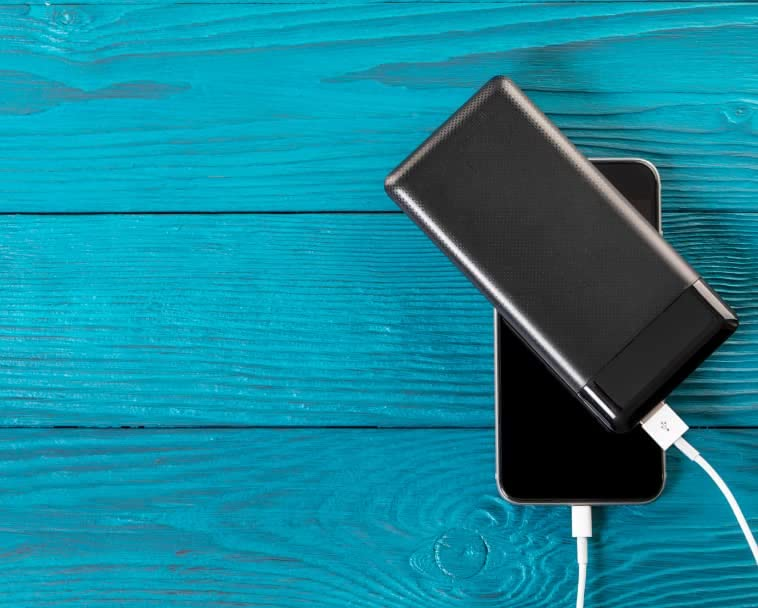

WeatherTech CupFone Cup Holder for Car Phone Mount Automobile
Cradle Compatible with iPhone and Cell Phones
Price: $19.99
- 100% Designed, Engineered, and Manufactured in the USA by WeatherTech!
- Designed using interchangeable base cups allowing you to customize the perfect snug fit.
- The adjustable phone holder fits virtually all known mobile phones, including those with normal sized protective cases.
- Base allows phone to rotate 360°, adjustable for viewing from any seat position.
- Open access bottom lets you easily charge your mobile device while it is in place.
- Knob tightens easily and securely locks position
- Classic round toe chelsea rain boots, chunky platform short boots, slip on ankle boots with waterproof synthetic upper features a patent leather design, comfortable to wear for all day walking.
Add to Cart
Add to List